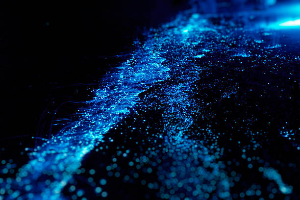

The Story
When we think of biological lifeforms that glow, we often imagine creatures of the deep ocean. Yet, hidden within the terrestrial woods, certain species of fungi quietly perform their own biochemical magic. Known commonly as "foxfire" or "fairy fire," these glowing mushrooms emit a haunting green or blue luminescence that can last for days.
This eerie glow is the result of a chemical reaction between a molecule called luciferin and an enzyme called luciferase—a biological process that creates "cold light" with almost zero heat waste. Unlike humans, who rely on external power to light up the night, these fungi carry their own internal stars. They draw elements from the decaying wood they consume and turn that breakdown of matter into pure, visible energy.
But why expend precious energy to glow in the dark? In the quiet depths of the woods, where the wind barely blows, fungi need a way to spread their spores. By glowing, they attract nocturnal insects like beetles and flies. These insects come to investigate the light, pick up the fungal spores on their bodies, and carry them to new territories. In this way, bioluminescence is not just a beautiful display; it is a silent, glowing broadcast for survival and continuation.

Philosophical Questions
Is light a universal language?
From the distant galaxies shining in the cosmos to the tiny fungi glowing on a rotting log, light seems to be a fundamental way the universe communicates. It attracts, it warns, and it reveals.
This challenges us to see life not just as matter, but as an active participant in the cosmic dance of energy, using light to bridge the gap between organisms.
What is the value of the unseen and untouched?
Bioluminescent flora often only thrive in the deepest, most undisturbed parts of the wilderness. Their light is meant for the insects of the night, not for human eyes.
This raises a humbling thought: nature creates staggering beauty and complexity that exists entirely independent of human observation or appreciation.
Can there be creation within decay?
These glowing mushrooms feed exclusively on dead and decaying wood. They take what has perished and transform it into a vibrant, living light.
It serves as a powerful metaphor that endings are rarely final in nature. Even in the heart of decay and darkness, life finds a way to spark something entirely new and brilliant.